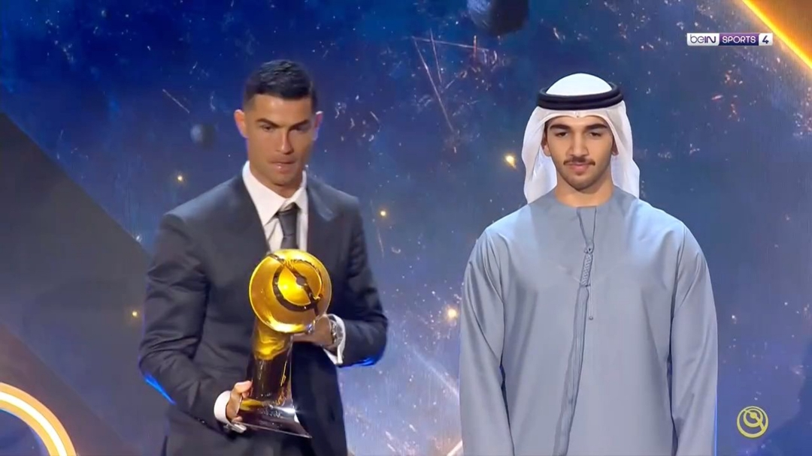

Self-Founded 'Globe Soccer Awards' Handed to Himself
Award origin: The Globe Soccer Awards were founded in 2010 by Italian Tommaso Bendoni, held annually in Dubai and billed as celebrating the world's best players, coaches, agents and clubs. Long held in Dubai, it has been nicknamed the 'Dubai Ballon d'Or', but its authority has never approached that of the France Football Ballon d'Or or The Best FIFA Football Awards.
The Mendes shadow: The most damaging criticism of the award is the conflict of interest: Ronaldo's agent Jorge Mendes has been widely reported as a co-owner / deep partner of the awards. Mendes himself has won 'Best Agent' almost every year since the first edition — both judge and winner, handing the prize with one hand and receiving it with the other, year after year.
Ronaldo's sweep: With Mendes steering, Ronaldo became the award's biggest winner: six 'Player of the Year' crowns, the 2020 'Player of the Century', and three straight 'Best Middle East Player' (2023-2025) after moving to Saudi. Whenever the Ballon d'Or or FIFA Best went elsewhere, Ronaldo could always 'bounce back' in Dubai — the trophy count is less honour than consolation.
Self-awarded controversy: Given the deep Mendes-Ronaldo tie, media and fans mercilessly mocked it as 'Ronaldo's self-awarded prize'. Messi fans in particular sneered, generating reams of 'Dubai buffet' memes. Wikipedia carries a critical entry noting the award's 'alleged favouritism toward Mendes-stable players'; its credibility sits in an awkward grey zone in mainstream football.
Expansion and marketing: In recent years the awards have constantly added new categories ('Fans' Award', 'Best Middle East', etc.) and broadened their regional reach. The 2025 edition was slated for Dubai's Atlantis The Royal hotel, with Ronaldo still firmly on the shortlist. Critics see it as tailoring regional awards for a particular player, with commercial logic overriding sporting fairness.
Broad comparison: Versus the historic Ballon d'Or (founded 1956) and FIFA Best (roots back to 1991), the Globe Soccer Awards lack a transparent voting mechanism and broad participation by international journalists, captains and coaches; the make-up of its electorate has long been opaque. An award deeply entangled with an agent and repeatedly crowning his client can only ever be a self-entertaining show.